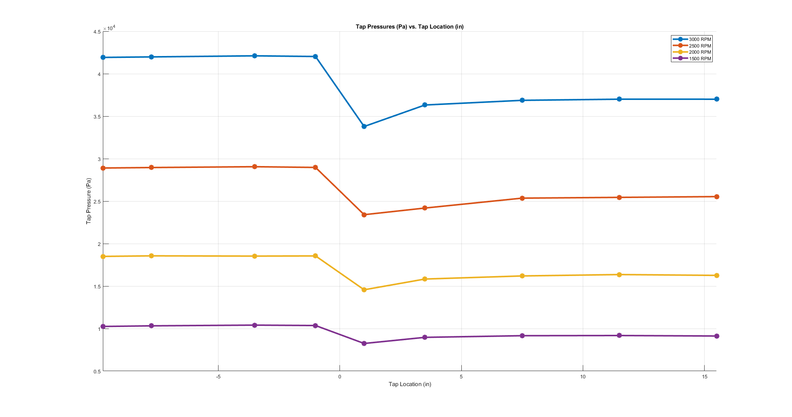

Calculations for Lab 3: Obstruction Flow
This code written by Michael White
clear; clc; close all; % Import tap location tables with the averaged data data.rpm3000 = readtable('rpm3000.xlsx'); data.rpm2500 = readtable('rpm2500.xlsx'); data.rpm2000 = readtable('rpm2000.xlsx'); data.rpm1500 = readtable('rpm1500.xlsx'); % Display these tables as they will appear in the report disp('Averaged Data @ 3000 RPM:');disp(data.rpm3000); disp('Averaged Data @ 2500 RPM:');disp(data.rpm2500); disp('Averaged Data @ 2000 RPM:');disp(data.rpm2000); disp('Averaged Data @ 1500 RPM:');disp(data.rpm1500); % Identify the average flow rate for each rpm setting and write to vector rpmSettings = fieldnames(data); for i = 1:numel(rpmSettings) calcValues.avgFlowMeasured_GPM(i,1) = mean(data.(char(rpmSettings(i))).FlowRate_GPM); calcValues.avgFlowMeasured_GPM_sd(i,1) = sqrt(sum(data.(char(rpmSettings(i))).FlowRate_GPM_stddev.^2))... /length(data.(char(rpmSettings(i))).FlowRate_GPM_stddev); end % Generate vector of flow rates in m^3/s to data struct for i = 1:length(calcValues.avgFlowMeasured_GPM) calcValues.avgFlowMeasured_m3s(i,1) = calcValues.avgFlowMeasured_GPM(i)/15850.3; calcValues.avgFlowMeasured_m3s_sd(i,1) = calcValues.avgFlowMeasured_GPM_sd(i)/15850.3; end % Generate table for output measured flows in both unit sets with std dev flowTable = table(char(rpmSettings), calcValues.avgFlowMeasured_GPM,... calcValues.avgFlowMeasured_GPM_sd, calcValues.avgFlowMeasured_m3s,... calcValues.avgFlowMeasured_m3s_sd); flowTable.Properties.VariableNames = ... {'rpmSettings' 'avgFlowMeasured_GPM' 'avgFlowMeasured_GPM_StdDev'... 'avgFlowMeasured_m3s' 'avgFlowMeasured_m3s_StdDev'}; disp('Table of Average Measured Flow in GPM and m3/s');disp(flowTable); % Convert pressures from table into pascals and write to new vector for i = 1:numel(rpmSettings) for j = 1:length(data.(char(rpmSettings(i))).TapPressure_H20) calcValues.tapPress_Pa.(char(rpmSettings(i)))(j,1) = ... data.(char(rpmSettings(i))).TapPressure_H20(j)*249.0889; calcValues.tapPress_Pa.(strcat(char(rpmSettings(i)),'_sd'))(j,1) = ... data.(char(rpmSettings(i))).TapPressure_H20_stddev(j)*249.0889; end end % Generate tables of tap pressures in pascals, and output them for i = 1:numel(rpmSettings) pressureTables.(char(rpmSettings(i))) = table(... calcValues.tapPress_Pa.(char(rpmSettings(i))),... calcValues.tapPress_Pa.(strcat(char(rpmSettings(i)),'_sd'))); pressureTables.(char(rpmSettings(i))).Properties.VariableNames = ... {'tapPress_Pa' 'tapPress_Pa_StdDev'}; disp(strcat("Table of Pressures (Pa) for ",char(rpmSettings(i)))); disp(pressureTables.(char(rpmSettings(i)))); end % Plot tap pressure against location for each pump setting on one figure figure; hold on; set(gcf, 'Position', get(0, 'Screensize')); grid on; for i = 1:numel(rpmSettings) plot(data.(char(rpmSettings(i))).TapLocation_in,calcValues.tapPress_Pa.(char(rpmSettings(i))),... 'LineWidth',3,'Marker','*','MarkerSize',10); xlimMin(i) = min(data.(char(rpmSettings(i))).TapLocation_in); xlimMax(i) = max(data.(char(rpmSettings(i))).TapLocation_in); end xlim([min(xlimMin),max(xlimMax)]); clear xlimMax; clear xlimMin; xlabel('Tap Location (in)'); ylabel('Tap Pressure (Pa)'); legend('3000 RPM','2500 RPM','2000 RPM','1500 RPM'); title('Tap Pressures (Pa) vs. Tap Location (in)'); % Input variables from system for calculating different parameters system.D_in = 1.939; % in system.D_m = system.D_in*0.0254; % m system.d_in = 1.375; % in system.d_m = system.d_in*0.0254; % m system.Ap_m2 = (pi/4)*(system.D_m)^2; % m2 system.Ao_m2 = (pi/4)*(system.d_m)^2; % m2 system.dynVisc = 0.000965; % (N*s)/m2 system.kinVisc = 9.667e-7; % m2/s system.density = 997.8857; % kg/m3 system.Beta = system.d_m/system.D_m; % Calculated velocity from measured flow values for i = 1:numel(rpmSettings) calcValues.avgVelocityMeasured_ms(i,1) = calcValues.avgFlowMeasured_m3s(i)/system.Ap_m2; calcValues.avgVelocityMeasured_ms_sd(i,1) = calcValues.avgFlowMeasured_m3s_sd(i)/system.Ap_m2; end % Display table of velocities velocityTable = table(char(rpmSettings), calcValues.avgVelocityMeasured_ms,... calcValues.avgVelocityMeasured_ms_sd); velocityTable.Properties.VariableNames = ... {'rpmSettings' 'avgVelocityMeasured_ms' 'avgVelocityMeasured_ms_StdDev'}; disp('Table of Average Measured Velocities in m/s');disp(velocityTable); % Calculated Reynolds numbers from velocities with system parameters for i = 1:numel(rpmSettings) system.reynolds(i,1) = ... system.density*calcValues.avgVelocityMeasured_ms(i)*system.D_m/system.dynVisc; end % Using reynolds values and Beta, identify Co values from graph system.Co = [0.616 0.619 0.623 0.626]; % Calculate differential pressures from values on either side of orifice for i = 1:numel(rpmSettings) calcValues.pressureDiff_Pa(i,1) = ... calcValues.tapPress_Pa.(char(rpmSettings(i)))(4)- ... calcValues.tapPress_Pa.(char(rpmSettings(i)))(5); calcValues.pressureDiff_Pa_sd(i,1) = ... sqrt((calcValues.tapPress_Pa.(strcat(char(rpmSettings(i)),'_sd'))(4)).^2+ ... (calcValues.tapPress_Pa.(strcat(char(rpmSettings(i)),'_sd'))(5)).^2); end % Calculate theoretical flows from differential pressure for i = 1:numel(rpmSettings) calcValues.avgFlowCalculated_m3s(i,1) = system.Co(i)*system.Ao_m2*... sqrt((2*calcValues.pressureDiff_Pa(i))/(system.density*(1-system.Beta^4))); calcValues.avgFlowCalculated_m3s_sd(i,1) = system.Co(i)*system.Ao_m2*... sqrt((2*calcValues.pressureDiff_Pa_sd(i))/(system.density*(1-system.Beta^4))); end % Display table of differential pressures and corresponding flows diffTable = table(char(rpmSettings), calcValues.pressureDiff_Pa,... calcValues.pressureDiff_Pa_sd, calcValues.avgFlowCalculated_m3s,... calcValues.avgFlowCalculated_m3s_sd); diffTable.Properties.VariableNames = ... {'rpmSettings' 'pressureDiff_Pa' 'pressureDiff_Pa_StdDev' ... 'avgFlowCalculated_m3s' 'avgFlowCalculated_m3s_sd'}; disp('Table of Differential Pressures (Pa) and Corresponding calculated flows (m3s)'); disp(diffTable); % Calculate percent difference between calculted and measured flows for i = 1:numel(rpmSettings) calcValues.percentError(i,1) = ((calcValues.avgFlowMeasured_m3s(i)-calcValues.avgFlowCalculated_m3s(i))/... calcValues.avgFlowMeasured_m3s(i))*100; end % Generate table for all measured errorTable = table(char(rpmSettings), calcValues.avgFlowMeasured_m3s,... calcValues.avgFlowMeasured_m3s_sd, calcValues.avgFlowCalculated_m3s,... calcValues.avgFlowCalculated_m3s_sd, calcValues.percentError); errorTable.Properties.VariableNames = ... {'rpmSettings' 'avgFlowMeasured_m3s' 'avgFlowMeasured_m3s_StdDev' ... 'avgFlowCalculated_m3s' 'avgFlowCalculated_m3s_StdDev' 'percentError'}; disp('Table of Average Measured and Calculated Flows');disp(errorTable);
Averaged Data @ 3000 RPM:
TapLocation_in TapPressure_H20 TapPressure_H20_stddev FlowRate_GPM FlowRate_GPM_stddev
______________ _______________ ______________________ ____________ ___________________
-9.75 168.3 0.61809 47.934 0.095812
-7.75 168.55 0.95223 47.894 0.075033
-3.5 169.06 0.58579 47.878 0.043243
-1 168.73 0.90484 47.862 0.052631
1 135.65 6.816 47.884 0.08735
3.5 145.81 1.9995 47.92 0.143
7.5 148.02 0.50708 47.818 0.044944
11.5 148.56 1.0803 47.776 0.088204
15.5 148.55 0.95277 47.818 0.10616
Averaged Data @ 2500 RPM:
TapLocation_in TapPressure_H20 TapPressure_H20_stddev FlowRate_GPM FlowRate_GPM_stddev
______________ _______________ ______________________ ____________ ___________________
-9.75 116.03 0.60262 39.786 0.11238
-7.75 116.26 0.66389 39.772 0.054037
-3.5 116.65 0.80729 39.864 0.060249
-1 116.3 0.66282 39.742 0.059749
1 93.974 5.3743 39.758 0.043243
3.5 97.112 4.2502 39.742 0.042071
7.5 101.8 1.257 39.794 0.14311
11.5 102.16 0.8209 39.742 0.12558
15.5 102.52 0.81452 39.656 0.078613
Averaged Data @ 2000 RPM:
TapLocation_in TapPressure_H20 TapPressure_H20_stddev FlowRate_GPM FlowRate_GPM_stddev
______________ _______________ ______________________ ____________ ___________________
-9.75 74.258 0.58045 31.74 0.074833
-7.75 74.526 0.44055 31.788 0.053572
-3.5 74.402 0.79773 31.75 0.065192
-1 74.488 0.43043 31.74 0.06892
1 58.484 0.63885 31.746 0.038471
3.5 63.56 0.90722 31.78 0.064031
7.5 65.026 0.42764 31.836 0.033615
11.5 65.68 0.72818 31.834 0.058138
15.5 65.288 0.38311 31.732 0.089833
Averaged Data @ 1500 RPM:
TapLocation_in TapPressure_H20 TapPressure_H20_stddev FlowRate_GPM FlowRate_GPM_stddev
______________ _______________ ______________________ ____________ ___________________
-9.75 41.144 0.69934 23.744 0.035777
-7.75 41.448 0.29508 23.724 0.070214
-3.5 41.786 0.22711 23.788 0.074632
-1 41.586 0.13631 23.744 0.046152
1 33.108 0.43637 23.808 0.049699
3.5 36.004 0.20305 23.75 0.065955
7.5 36.782 0.32461 23.762 0.060581
11.5 36.862 0.14567 23.75 0.044721
15.5 36.634 0.26885 23.756 0.077653
Table of Average Measured Flow in GPM and m3/s
rpmSettings avgFlowMeasured_GPM avgFlowMeasured_GPM_StdDev avgFlowMeasured_m3s avgFlowMeasured_m3s_StdDev
___________ ___________________ __________________________ ___________________ __________________________
rpm3000 47.865 0.029102 0.0030198 1.836e-06
rpm2500 39.762 0.029148 0.0025086 1.839e-06
rpm2000 31.772 0.020973 0.0020045 1.3232e-06
rpm1500 23.758 0.020009 0.0014989 1.2624e-06
Table of Pressures (Pa) for rpm3000
tapPress_Pa tapPress_Pa_StdDev
___________ __________________
41923 153.96
41984 237.19
42111 145.91
42030 225.38
33789 1697.8
36321 498.05
36871 126.31
37004 269.09
37003 237.32
Table of Pressures (Pa) for rpm2500
tapPress_Pa tapPress_Pa_StdDev
___________ __________________
28902 150.11
28959 165.37
29057 201.09
28970 165.1
23408 1338.7
24190 1058.7
25356 313.11
25446 204.48
25537 202.89
Table of Pressures (Pa) for rpm2000
tapPress_Pa tapPress_Pa_StdDev
___________ __________________
18497 144.58
18564 109.73
18533 198.71
18554 107.22
14568 159.13
15832 225.98
16197 106.52
16360 181.38
16263 95.427
Table of Pressures (Pa) for rpm1500
tapPress_Pa tapPress_Pa_StdDev
___________ __________________
10249 174.2
10324 73.5
10408 56.571
10359 33.953
8246.8 108.7
8968.2 50.578
9162 80.856
9181.9 36.285
9125.1 66.967
Table of Average Measured Velocities in m/s
rpmSettings avgVelocityMeasured_ms avgVelocityMeasured_ms_StdDev
___________ ______________________ _____________________________
rpm3000 1.5851 0.00096376
rpm2500 1.3168 0.0009653
rpm2000 1.0522 0.00069457
rpm1500 0.78681 0.00066264
Table of Differential Pressures (Pa) and Corresponding calculated flows (m3s)
rpmSettings pressureDiff_Pa pressureDiff_Pa_StdDev avgFlowCalculated_m3s avgFlowCalculated_m3s_sd
___________ _______________ ______________________ _____________________ ________________________
rpm3000 8240.9 1712.7 0.0027746 0.0012649
rpm2500 5562.2 1348.8 0.0022906 0.001128
rpm2000 3986.4 191.88 0.0019517 0.0004282
rpm1500 2111.8 113.87 0.0014274 0.00033146
Table of Average Measured and Calculated Flows
rpmSettings avgFlowMeasured_m3s avgFlowMeasured_m3s_StdDev avgFlowCalculated_m3s avgFlowCalculated_m3s_StdDev percentError
___________ ___________________ __________________________ _____________________ ____________________________ ____________
rpm3000 0.0030198 1.836e-06 0.0027746 0.0012649 8.1187
rpm2500 0.0025086 1.839e-06 0.0022906 0.001128 8.6889
rpm2000 0.0020045 1.3232e-06 0.0019517 0.0004282 2.6323
rpm1500 0.0014989 1.2624e-06 0.0014274 0.00033146 4.7736
